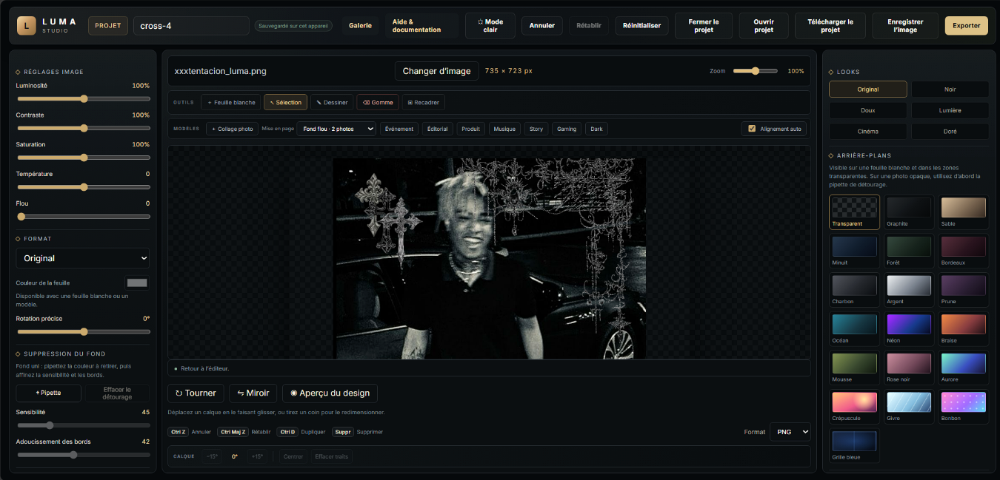
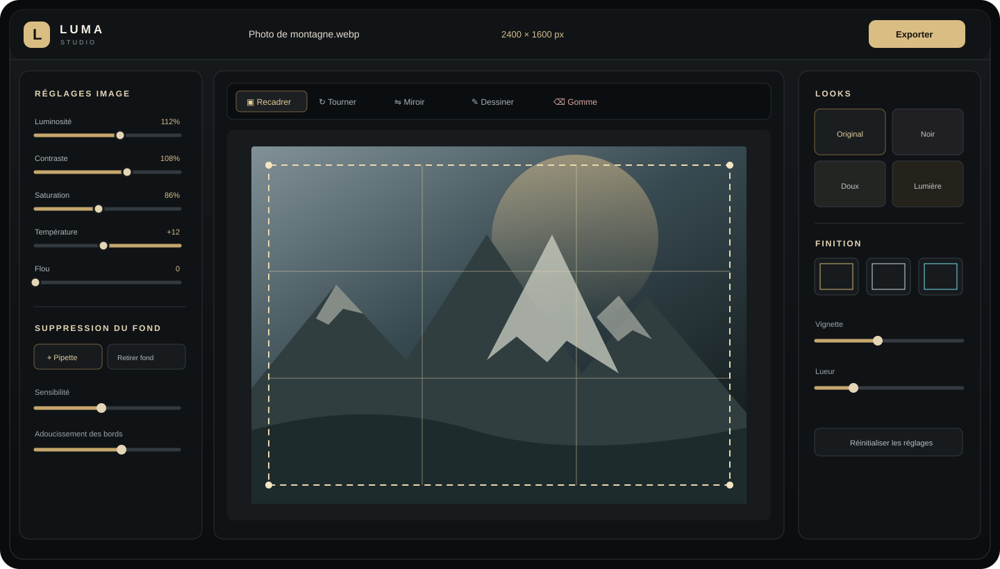
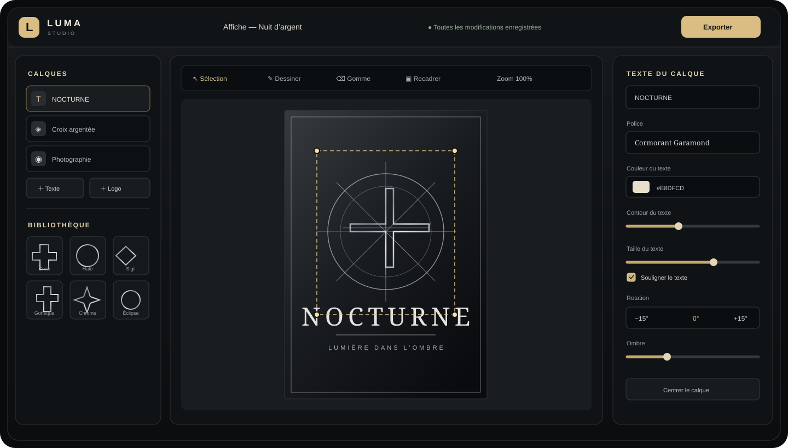
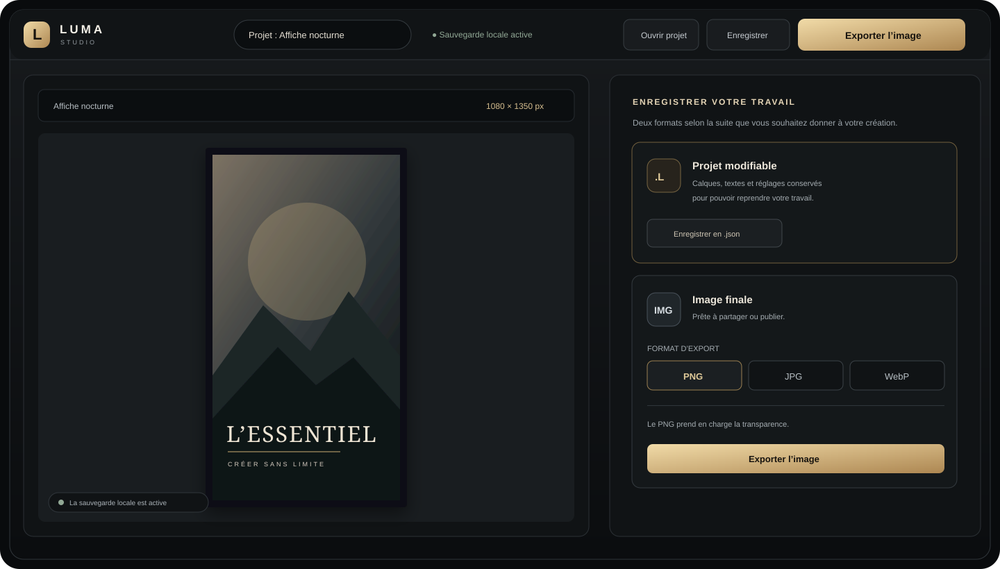

Tout pour créer en confiance.
Du premier import à l’export final, retrouvez ici les étapes utiles pour tirer le meilleur de votre studio créatif.
Bien démarrer
Luma Studio est gratuit et fonctionne sans compte. Depuis l’espace de travail, choisissez simplement votre point de départ :
- Importer une image pour retoucher une photo ou un visuel existant.
- Feuille blanche pour commencer une composition libre.
- Un modèle dans la barre au-dessus du canevas pour obtenir une mise en page prête à personnaliser.

Retoucher une image
Les réglages de l’image se trouvent dans le panneau latéral. La luminosité, le contraste, la saturation, la température et le flou permettent d’ajuster le rendu. Les looks prédéfinis offrent un point de départ rapide. Utilisez Aperçu du design sous le canevas pour afficher votre création finale en plein écran, sans les panneaux de l’éditeur. Cliquez sur Retour à l’éditeur ou appuyez sur Échap pour continuer à la modifier.

Recadrer, tourner et dessiner
- Choisissez Recadrer, dessinez le cadre sur l’image, puis validez ou annulez.
- Utilisez Tourner, Miroir ou le curseur de rotation précise pour ajuster l’orientation.
- Avec Dessiner, choisissez une couleur et une pointe, puis tracez sur l’image.
- La Gomme retire vos traits localement sans effacer l’image originale.
Retirer un fond uni
Activez la pipette, cliquez sur la couleur du fond à retirer, puis réglez la sensibilité et l’adoucissement des bords. Cette méthode fonctionne mieux lorsque le fond est uni et contrasté.
Composer avec les calques
Ajoutez des calques de texte ou des emblèmes depuis le panneau Calques. Sélectionnez un élément pour accéder à ses réglages.

- Déplacer et redimensionner : faites glisser le calque ou tirez l’une de ses poignées de coin. Le redimensionnement conserve les proportions.
- Texte : modifiez le contenu, la police, la taille, le contour et le soulignement. Activez le dégradé pour choisir trois couleurs.
- Photos : choisissez Collage photo pour importer 2 à 6 images dans une grande composition paysage. Avec deux photos, sélectionnez Fond flou : la première photo sélectionnée devient le fond flou et la seconde le premier plan net. Les miniatures dans la liste des calques aident à repérer chaque photo ; sélectionnez-en une pour régler son flou ou sa position, sans modifier les autres. Ajoutez du texte et des logos au-dessus du collage ; chaque élément reste un calque indépendant. Le mode grille reste disponible pour toutes les compositions.
- Logo et emblème : recherchez parmi les 40 logos PNG de la bibliothèque ou importez un visuel PNG, JPG, WebP ou SVG. La teinte recolore les pixels visibles sans ajouter de contour.
- Finition : ajustez l’opacité, la rotation, la position et l’ombre.
- Organisation : dupliquez, avancez, reculez ou supprimez le calque sélectionné. Réglez son Ordre Z pour choisir la profondeur de n’importe quelle photo, texte ou logo : une valeur élevée le place devant les autres calques.
- Visibilité et verrouillage : masquez un calque ou verrouillez-le pour éviter de le modifier par erreur.
- Annuler et rétablir : revenez sur une action, puis rétablissez-la si besoin.
Formats sociaux et panneaux adaptatifs
Choisissez un format dans le panneau Format pour cadrer votre création : formats Instagram, TikTok / Reels, YouTube, couvertures Facebook, X et LinkedIn, photos paysage ou portrait, épingle et papier A4. Le format règle les proportions du cadrage ; une feuille blanche adopte aussi une taille de travail adaptée.
Sur téléphone et tablette, le canevas reste au centre de l’espace de travail. Utilisez les deux menus hamburger Image & calques et Styles pour ouvrir les outils dans un panneau latéral. Touchez Fermer ou la zone assombrie pour revenir au canevas ; les panneaux se ferment aussi avec Échap.
Modèles, feuille et finitions
Le studio propose sept compositions prêtes à personnaliser : affiche d’événement, éditorial, produit, couverture musicale, story, gaming et une affiche nocturne Dark. Les aperçus de la galerie sont rendus par le même éditeur : leur format, leurs calques, leurs couleurs, leurs fonds et leurs cadres sont ceux du modèle ouvert. Remplacez les textes, ajustez les couleurs et ajoutez vos propres images pour vous l’approprier.
- Choisissez une couleur de feuille ou l’un des fonds dégradés et texturés. La Grille bleue ajoute une trame de 40 px sur un dégradé bleu ; le fond reste visible sur une feuille vierge ou dans les zones transparentes d’une image détourée.
- Personnalisez la finition avec les cadres, les effets lumineux, la vignette et les autres traitements disponibles.
- Les polices locales installées sont disponibles dans le menu de texte, en plus des polices en ligne.
- Fermer le projet revient à l’écran de départ sans supprimer la sauvegarde automatique de cet appareil.
- Le zoom change l’affichage de travail, pas la taille finale du fichier exporté.
Sauvegarder et exporter
Sauvegarde locale
Le studio enregistre automatiquement la dernière création sur cet appareil et dans ce navigateur. Cette sauvegarde locale n’est pas un stockage en ligne : elle n’est pas partagée entre appareils ni entre navigateurs.
Fichier de projet modifiable
Utilisez Télécharger le projet pour enregistrer le projet modifiable au format JSON (.json), puis Ouvrir projet pour le reprendre plus tard dans Luma Studio. L’état de sauvegarde est affiché en haut de l’éditeur ; pendant la génération d’une image, le bouton indique que l’export est en préparation.
Image finale
Le bouton Exporter génère une image en PNG, JPG ou WebP. Le PNG est adapté à la transparence ; le JPG ne conserve pas les zones transparentes.

Raccourcis utiles
Questions fréquentes
Est-ce que Luma Studio est gratuit ?
Oui. Le studio est gratuit et ne demande pas de compte.
Où sont enregistrées mes créations ?
La sauvegarde automatique reste dans le stockage local du navigateur utilisé. Pour archiver ou transférer un projet, téléchargez son fichier .json.
Comment reprendre un projet sur un autre appareil ?
Enregistrez le projet en .json, transférez ce fichier vers l’autre appareil, puis ouvrez-le dans Luma Studio.
Pourquoi mon fond de composition ne se voit-il pas sur la photo ?
Les fonds de composition apparaissent sur une feuille vierge ou à travers les zones transparentes. Sur une photo opaque, utilisez d’abord l’outil de suppression du fond.